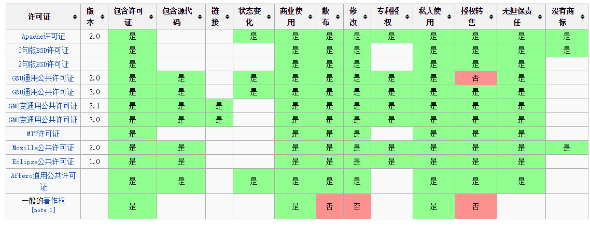
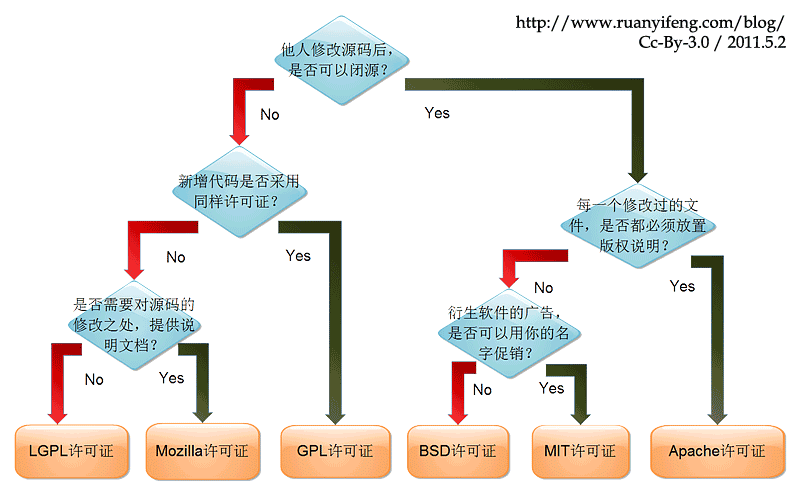

世界のオープンソースライセンス（Open Source License）はおそらく100種類以上あります。今日は、私たちがよく目にするいくつかのオープンソースライセンスを紹介します。おおまかにGPL、BSD、MIT、Mozilla、Apache、LGPLなどがあります。

Apache License
Apache License（Apacheライセンス）は、Apacheソフトウェア財団が公開したフリーソフトウェアライセンスです。
Apache Licenceは、有名な非営利オープンソース組織Apacheが採用しているライセンスです。このライセンスはBSDに似ており、コードの共有と最終的な原作者の著作権を奨励し、ソースコードの修正と再配布も許可しています。ただし、以下の条件を守る必要があります。
- コードの利用者にApache Licenceのコピーを提供する必要があります。
- コードを修正した場合、修正されたファイル内でその旨を明記する必要があります。
- 派生コード（修正コードおよびソースコードから派生したコード）には、元のコード内のライセンス、商標、特許声明、および元の作者が含めることを規定したその他の説明を保持する必要があります。
- 再配布する製品にNoticeファイルが含まれる場合、そのNoticeファイルにはApache Licenceを含める必要があります。Noticeに独自の許諾を追加することはできますが、それがApache Licenceへの変更を構成するように見せてはなりません。
- Apache Licenceは商用利用にも友好的なライセンスです。利用者は必要に応じてコードを修正し、オープンソースまたは商用製品として公開・販売することができます。
このライセンスを使用する利点は次のとおりです。
永久的な権利：一度許可されれば、永久に保持されます。
世界的な権利：ある国で許可を得れば、すべての国に適用されます。たとえば、あなたが米国にいて、ライセンスがインドから許可されたものでも問題ありません。
ライセンス無料：ロイヤルティはなく、初期・後期とも一切費用はかかりません。
ライセンスの非排他性：誰でもライセンスを取得できます。
ライセンスの取消不能性：一度許可を得たら、誰もそれを取り消すことはできません。たとえば、その製品コードに基づいて派生製品を開発した場合、いつかそのコードの使用を禁止される心配はありません。
BSD
BSDは"Berkeley Software Distribution"の略で、"バークレーソフトウェアディストリビューション"という意味です。
BSDオープンソースライセンスは、利用者に大きな自由を与えるライセンスです。ソースコードを自由に使用・修正でき、修正後のコードをオープンソースまたはプロプライエタリソフトウェアとして再配布することもできます。BSDライセンスを使用したコードを公開する場合、またはBSDライセンスのコードを基にして二次開発し自分の製品を制作する場合、次の3つの条件を満たす必要があります。
- 1. 再配布する製品にソースコードが含まれる場合、そのソースコードには元のコードのBSDライセンスが含まれていなければなりません。
- 2. 再配布するのがバイナリライブラリ/ソフトウェアのみの場合、ライブラリ/ソフトウェアのドキュメントと著作権表示に元のコードのBSDライセンスを含める必要があります。
- 3. オープンソースコードの作者・組織名と元の製品名をマーケティングに使用してはなりません。
BSDコードはコード共有を奨励しますが、コード作者の著作権を尊重する必要があります。BSDは利用者によるコードの修正・再配布を許可し、BSDコードを使用またはそれに基づいて商用ソフトウェアを開発し公開・販売することも許可するため、商用統合に非常に友好的なライセンスです。また、多くの企業がオープンソース製品を選ぶ際にBSDライセンスを最優先します。これらのサードパーティコードを完全に制御でき、必要に応じて修正や二次開発ができるからです。
GPL
GPL（GNU General Public License）：GNU一般公衆ライセンス。
LinuxはGPLを採用しています。。
GPLライセンスは、BSD、Apache Licenceなどコードの再利用を奨励するライセンスとは大きく異なります。GPLの出発点は、コードのオープンソース/無料使用と、参照・修正・派生コードのオープンソース/無料使用ですが、修正後および派生コードをクローズドソースの商用ソフトウェアとして公開・販売することは許可しません。これが、商用企業のLinuxや、個人・組織・商用ソフトウェア企業によって開発されたLinux上のさまざまな無料ソフトウェアを含む、無料の各種Linuxを利用できる理由です。
LGPL
LGPLは、主にライブラリ使用のために設計されたGPLのオープンソースライセンスです。GPLライセンスのライブラリを使用・修正・派生させるソフトウェアはすべてGPLライセンスを採用しなければならないというGPLの要件とは異なり、LGPLは商用ソフトウェアがライブラリ参照（link）方式でLGPLライブラリを使用することを許可し、商用ソフトウェアのコードをオープンソース化する必要はありません。これにより、LGPLライセンスのオープンソースコードは商用ソフトウェアがライブラリとして参照し、公開・販売することができます。
ただし、LGPLライセンスのコードを修正または派生させる場合、修正したすべてのコード、修正部分に関連する追加コード、および派生コードはすべてLGPLライセンスを採用しなければなりません。したがって、LGPLライセンスのオープンソースコードは、商用ソフトウェアがサードパーティライブラリとして参照するのに非常に適していますが、LGPLライセンスのコードを基礎として修正・派生による二次開発を行いたい商用ソフトウェアには適していません。
GPL/LGPLはともに原作者の知的財産権を保護し、誰かがオープンソースコードを利用して類似製品を複製・開発することを防ぎます。
MIT
MITはBSDと同じくらい寛容なライセンスで、マサチューセッツ工科大学（Massachusetts Institute of Technology, MIT）に由来し、X11ライセンスとも呼ばれます。作者は著作権を保持するだけで、他には何の制限も設けたくないというものです。MITはBSDと似ていますが、BSDよりさらに寛容で、現在最も制限の少ないライセンスです。このライセンスの唯一の条件は、修正後のコードまたは配布パッケージに原作者の許諾情報を含めることです。商用ソフトウェアに適用可能です。MITを使用するソフトウェアプロジェクトには、jquery、Node.jsがあります。
MITはBSDと似ていますが、BSDよりさらに寛容で、現在最も制限の少ないライセンスです。このライセンスの唯一の条件は、修正後のコードまたは配布パッケージに原作者の許諾情報を含めることです。商用ソフトウェアに適用可能です。MITを使用するソフトウェアプロジェクトには、jquery、Node.jsがあります。
MPL (Mozilla Public License 1.1)
MPLライセンスは無料での再配布と無料での修正を許可しますが、修正後のコードの著作権はソフトウェアの提唱者に帰属することを要求します。このライセンスは商用ソフトウェアの利益を保護し、このソフトウェアに基づく修正はそのソフトウェアに著作権を無償で提供することを要求します。これにより、そのソフトウェアに関わるすべてのコードの著作権は、開発の提唱者の手に集中します。しかし、MPLは修正と無償使用を許可しています。MPLソフトウェアはリンクに関する要件はありません。
EPL (Eclipse Public License 1.0)
EPLは、Recipients（受領者）が任意に使用、複製、配布、頒布、表示、修正、および修正後のクローズドソースとしての二次的な商用公開を行うことを許可します。
EPLライセンスを使用するには、以下の規則を守る必要があります：
- Contributors（貢献者）がソースコードの全体または一部を再びオープンソースとして公開する場合、引き続きEPLオープンソースライセンスに従って公開しなければならず、他のライセンスに変更して公開することはできません。ただし、元の「ソースコード」のOwner（所有者）の許可を得た場合は除きます。
- EPLライセンスの下では、ソースコードを修正せずに商用公開することができます。ただし、修正後のソースコードを公開する場合、またはObject Codeを再配布する場合は、そのSource Codeが入手可能であることを宣言し、入手方法を通知しなければなりません。
- EPLの下のソースコードを一部として、他のプロプライエタリなソースコードと混ぜて一つのProjectとして公開する必要がある場合、Project/Product全体を私的なライセンスで公開できます。ただし、どの部分のコードがEPLの下にあるかを宣言し、その部分のコードが引き続きEPLに従うことを宣言しなければなりません。
- 4. 独立したモジュール（Separate Module）はオープンソース化する必要はありません。
Creative Commons（クリエイティブ・コモンズ）ライセンス
Creative Commons（CC）ライセンスは、真のオープンソースライセンスとは言えません。それらは主にデザイン関連のプロジェクトで使用されています。CCライセンスには多くの種類があり、それぞれが特定の権利を許諾します。CCライセンスには4つの基本部分があり、これらの部分は単独で機能することも、組み合わせて機能することもあります。以下にこれらの部分の概要を示します。
- 1. 表示（Attribution）：作品には作品の帰属を表示しなければなりません。これにより、作品は修正、配布、複製、その他の用途に使用できます。
- 2. 継承（ShareAlike）：作品は修正、配布、その他の操作が可能ですが、すべての派生作品はCCライセンスの下に置かなければなりません。
- 3. 非商用（NonCommercial）：作品は修正、配布などが可能ですが、商用目的には使用できません。ただし、何が「商用」かを示す文言は非常に曖昧で（正確な定義は提供されていません）、そのためあなたのプロジェクト内でそれを説明することができます。例えば、ある人々は「非商用」を単にこの作品を販売できないと解釈します。また、別の人々は、広告のあるウェブサイトでさえ使用できないと考えます。さらに、「商用」とはそれから利益を得ることだけを指すと考える人々もいます。
- 4. 改変禁止（NoDerivatives）
CCライセンスのこれらの条項は自由に組み合わせて使用できます。ほとんどの厳格なCCライセンスは「表示、非商用、改変禁止」の条項を宣言します。これは、作品を自由に共有できるが、変更したり料金を請求したりすることはできず、作品の帰属を宣言しなければならないことを意味します。このライセンスは非常に有用で、作品を広めることができながら、作品の使用に対して部分的または完全な制御を保持できます。最も制限の少ないCCライセンスのタイプは「表示」ライセンスであり、人々があなたの名誉を維持してくれる限り、あなたの作品をどのように使用してもよいことを意味します。
CCライセンスは、開発系プロジェクトよりもデザイン系プロジェクトで多く使用されています。しかし、誰も後者に使用することを妨げません。ただし、各部分条項がカバーできる権利とカバーできない権利を明確に理解する必要があります。
図解分析
